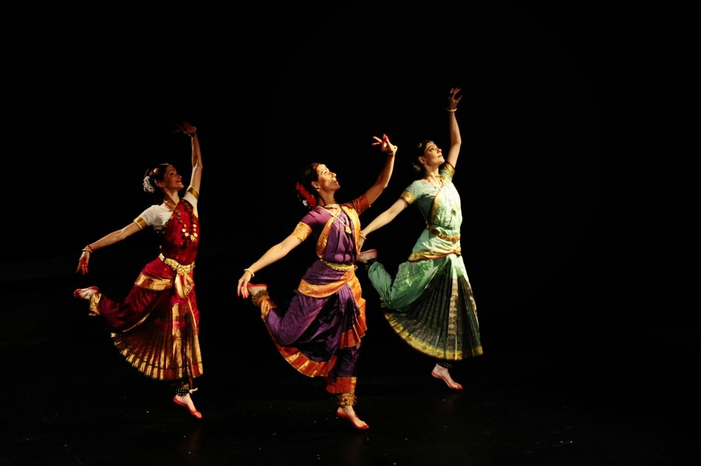

<div id="carouselExampleInterval" class="carousel slide" data-mdb-ride="carousel" data-mdb-interval="false">
    <div class="carousel-inner">
        <div class="carousel-item active">
            
        </div>
        <h1 class="b">"There are shortcuts to happiness, and dancing is one of them.” </h1>
        <div class="carousel-item" data-mdb-interval="2000">
            
        </div>
        <div class="carousel-item">
            
        </div>
    </div>
    <button class="carousel-control-prev" data-mdb-target="#carouselExampleInterval" type="button" data-mdb-slide="prev">
        <span class="carousel-control-prev-icon" aria-hidden="true"></span>
        <span class="visually-hidden">Previous</span>
    </button>
    <button class="carousel-control-next" data-mdb-target="#carouselExampleInterval" type="button" data-mdb-slide="next">
        <span class="carousel-control-next-icon" aria-hidden="true"></span>
        <span class="visually-hidden">Next</span>
    </button>
</div>
